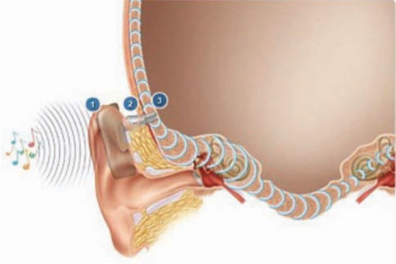

Will Styler - LIGN 113
The Tympanic Membrane
The Acoustic Reflex
Conductive vs. Sensorineural Hearing Loss
Middle Ear Implants
Around 0.1mm thick and 10mm in Diameter
Three layers
Outer Cutaneous Layer
Middle Fibrous Layer
Inner mucous membrane
Infection
Physical Trauma
Barotrauma
Or by measuring pressure changes when you artificially pull a vaccuum in the OE
Or by looking at the amount of sound which is absorbed by the ear
It usually heals naturally
It can also be fixed surgically

Myringotomy is the cutting of the pars tensa to relieve pressure
But sometimes you want it to last!

Simple, outpatient procedure
Children are usually anesthetized for this
Adults power through
Not particularly painful
They fall out on their own in 6-9 months
Insertion is non-fun
You can’t swim without earplugs
Liquids can get into the ME
Your ears don’t pop
And really, really important!
Be kind to your TM!


Also referred to as the ‘Stapedius Reflex’
Causes a temporary conductive hearing loss
There’s debate as to whether the Tensor Tympani is involved in humans
Sound >60 dB above the hearing threshold
Speech also triggers it
People with severe cochlear hearing loss have no acoustic reflex
Severe conductive loss can reduce/prevent it
Same thing with serious cochlear nerve damage
This means that it’s triggered in the pons, not the ear!
10ms to start, roughly
100ms+ to reach full tension
Tension reduces within a few seconds
It’s awesome
It’s super diagnostic!
External obstructions
Middle Ear Pathologies
Cochlear Physiology issues
Different causes of HL get different names!
Caused by problems between the world and the Oval Window
External obstructions and infections
Fluid, OM, Pressure issues
Tumors in the ME
TM perforations, ossicular dislocations
Caused by problems beyond the Oval Window
Issues inside the Cochlea
Issues with the hair cells
Issues with other physiological enablers of hearing
Issues with the auditory nerve
Neural issues
Conductive loss is often more treatable medically
Conductive loss can generally be restored to a greater extent
With profound sensorineural loss, nothing else matters
… but a complete conductive loss is bad news!
Missing ossicles
Irreparable TM
Missing or scarred-shut ear canals
Hearing aids are one approach
… but if we want to get fancy, we can use…
‘Soundbridge’
‘Otologics’




Offer some increased convenience relative to hearing aids
Don’t look like hearing aids
Can work where there are no ossicles or TM or ear canal
Offer another choice for conductive hearing loss
The Tympanic Membrane is awesome, and you want it intact
The Acoustic reflex is awesome, but it won’t save you
Conductive and Sensorineural Hearing Loss are different
Middle Ear Implants are really cool